🎬 J'ai demandé à Opus 5.5 de me créer la même application à tous les niveaux d'effort
📌 Synthèse Exécutive & Outils
Dans cette vidéo publiée sur la chaîne *Nate Herk | AI Automation*, l'analyste explore en profondeur l'impact des différents niveaux d'effort (de bas à ultra) appliqués au modèle avancé Opus 5.5 (accompagné de l'outil Claude Code et d'agents IA) pour résoudre une tâche d'ingénierie logicielle et de génération procédurale extrêmement complexe : transformer un dossier de 105 Go de vidéos enregistrées (provenant d'un événement virtuel baptisé *AIS Live*) en un monde 3D interactif et explorable à la troisième personne, simulant une conférence tech réaliste. Le test consiste à soumettre exactement le même prompt à l'agent sous différents paliers d'effort pour comparer rigoureusement les livrables finaux selon plusieurs métriques quantitatives et qualitatives : temps d'exécution, coût estimé via l'API, consommation totale de jetons, nombre de vérifications (*checks*) et interactions avec l'utilisateur.
Les résultats empiriques révèlent des dynamiques surprenantes quant au comportement des agents autonomes face à l'accroissement de la puissance de calcul allouée. Les exécutions de niveau bas, moyen, haut, extra et supérieur génèrent des mondes virtuels dotés de fonctionnalités variées (salles de conférence, scènes principales avec écrans dynamiques, intégration de flux vidéo, espaces de réseautage, bars à café, passeports de visite et mécaniques de badges). Toutefois, la corrélation entre le niveau d'effort, la stabilité du code (gestion des bugs de collision, fluidité des animations de marche) et le coût financier (oscillant de moins de 4 $ à plus de 16 $) démontre que plus d'effort ne rime pas systématiquement avec une perfection logicielle exempte de bugs, soulignant l'importance critique du choix du paramétrage selon la complexité réelle du cas d'usage en automatisation.
### 🛠️ Outils, Modèles & Logiciels Présentés
* **Claude Code** : Environnement de développement piloté par l'IA et assistant de codage utilisé pour orchestrer la création et l'exécution du projet 3D.
* **Opus 5.5** : Modèle d'intelligence artificielle ultra-performant et économique au cœur des expérimentations, capable de raisonnement complexe et de génération de code applicatif massif.
* **Agents IA** : Systèmes autonomes capables d'analyser des arborescences de fichiers lourdes, de manipuler des navigateurs et de valider itérativement des programmes informatiques.
* **Frame IO** : Plateforme cloud de gestion multimédia hébergeant les 105 Go de vidéos d'archives de l'événement *AIS Live*.
### 🔑 Points Clés & Enseignements Stratégiques
* **Complexité de l'ingénierie de prompt en milieu lourd** : Traduire un répertoire de 105 Go de données vidéo hétérogènes en une application 3D fonctionnelle démontre la capacité des agents actuels à structurer des environnements virtuels immersifs à partir de consignes textuelles vagues.
* **Variabilité des coûts et des temps de calcul** : Les exécutions d'agents requièrent des ressources substantielles, avec des durées variant de 16 minutes à plus d'une heure, et des coûts API théoriques s'étalant d'environ 3,91 $ à plus de 16 $ selon le niveau d'effort configuré.
* **Consommation de jetons et profondeur contextuelle** : L'utilisation de jetons grimpe de manière significative avec les paliers d'effort (passant d'environ 191 000 jetons en mode bas à plus de 500 000 à 730 000 jetons pour les niveaux supérieurs), traduisant une phase d'exploration et d'auto-correction plus profonde du code.
* **Fréquence des vérifications autonomes** : Les agents exécutent de multiples cycles de vérification (de 22 à 34 *checks*), ouvrant des navigateurs et testant de manière itérative les rendus pour s'assurer du bon fonctionnement de l'application générée.
* **Autonomie décisionnelle vs interaction humaine** : Contrairement aux attentes, la quasi-totalité des niveaux d'effort n'a posé aucune question à l'utilisateur (zéro question pour la majorité), le niveau *High* constituant l'unique exception en posant une seule et unique question durant tout le processus.
* **Défis de l'ergonomie et de la cinématique 3D** : La génération de code pour des interactions physiques (comme les animations de marche du personnage avatar, la gestion des collisions ou l'accès aux sièges) reste un point de friction majeur, produisant parfois des bugs visuels notables ou des comportements de déplacement jugés insatisfaisants.
* **Richesse fonctionnelle des environnements générés** : Les agents parviennent à implémenter des logiques métier sophistiquées au sein de l'application 3D : systèmes de badges/passeports, flux vidéo dynamiques, murs de ressources pour les intervenants, et espaces de networking interactifs.
* **Arbitrage entre performances et stabilité logicielle** : Le niveau d'effort le plus élevé ne garantit pas une absence totale de bugs visuels (glitches de géométrie, ombrages brusques, impossibilité de s'asseoir), rappelant qu'une vérification humaine finale reste indispensable dans les workflows d'automatisation complexes.
* **Optimisation des ressources en production** : Comprendre le ratio coût/bénéfice des niveaux d'effort permet aux ingénieurs en IA d'éviter le gaspillage de ressources calculatoires sur des tâches où un paramètre moyen ou extra offre un meilleur compromis.
* **Intégration multimédia contextuelle** : L'agent montre une excellente aptitude à contextualiser des données massives en extrayant des intervenants et des sessions spécifiques pour les positionner dynamiquement sur des scènes virtuelles et des écrans interactifs.
🛠️ Outils, Modèles & Logiciels Présentés
🔑 Points Clés & Enseignements Stratégiques
- ✦& Enseignements Stratégiques
- ✦Complexité de l'ingénierie de prompt en milieu lourd** : Traduire un répertoire de 105 Go de données vidéo hétérogènes en une application 3D fonctionnelle démontre la capacité des agents actuels à structurer des environnements virtuels immersifs à partir de consignes textuelles vagues.
- ✦Variabilité des coûts et des temps de calcul** : Les exécutions d'agents requièrent des ressources substantielles, avec des durées variant de 16 minutes à plus d'une heure, et des coûts API théoriques s'étalant d'environ 3,91 $ à plus de 16 $ selon le niveau d'effort configuré.
- ✦Consommation de jetons et profondeur contextuelle** : L'utilisation de jetons grimpe de manière significative avec les paliers d'effort (passant d'environ 191 000 jetons en mode bas à plus de 500 000 à 730 000 jetons pour les niveaux supérieurs), traduisant une phase d'exploration et d'auto-correction plus profonde du code.
- ✦Fréquence des vérifications autonomes** : Les agents exécutent de multiples cycles de vérification (de 22 à 34 *checks*), ouvrant des navigateurs et testant de manière itérative les rendus pour s'assurer du bon fonctionnement de l'application générée.
- ✦Autonomie décisionnelle vs interaction humaine** : Contrairement aux attentes, la quasi-totalité des niveaux d'effort n'a posé aucune question à l'utilisateur (zéro question pour la majorité), le niveau *High* constituant l'unique exception en posant une seule et unique question durant tout le processus.
- ✦Défis de l'ergonomie et de la cinématique 3D** : La génération de code pour des interactions physiques (comme les animations de marche du personnage avatar, la gestion des collisions ou l'accès aux sièges) reste un point de friction majeur, produisant parfois des bugs visuels notables ou des comportements de déplacement jugés insatisfaisants.
- ✦Richesse fonctionnelle des environnements générés** : Les agents parviennent à implémenter des logiques métier sophistiquées au sein de l'application 3D : systèmes de badges/passeports, flux vidéo dynamiques, murs de ressources pour les intervenants, et espaces de networking interactifs.
- ✦Arbitrage entre performances et stabilité logicielle** : Le niveau d'effort le plus élevé ne garantit pas une absence totale de bugs visuels (glitches de géométrie, ombrages brusques, impossibilité de s'asseoir), rappelant qu'une vérification humaine finale reste indispensable dans les workflows d'automatisation complexes.
- ✦Optimisation des ressources en production** : Comprendre le ratio coût/bénéfice des niveaux d'effort permet aux ingénieurs en IA d'éviter le gaspillage de ressources calculatoires sur des tâches où un paramètre moyen ou extra offre un meilleur compromis.
- ✦Intégration multimédia contextuelle** : L'agent montre une excellente aptitude à contextualiser des données massives en extrayant des intervenants et des sessions spécifiques pour les positionner dynamiquement sur des scènes virtuelles et des écrans interactifs.
⏱️ Chronologie & Transcription Complète Audio & Visuelle (Mot pour Mot)
Opus 5.5, Opus 5.5, Opus 5.5, Opus 5.5, Opus 5.5. Ce modèle est littéralement partout et pour de très bonnes raisons. Il est intelligent, il est pas cher, il a un goût incroyable, c'est un modèle AI incroyable. Mais avec chaque modèle AI, vous avez un choix d'effort, que ce soit bas, moyen, haut, extra, max ou ultra-code. Donc dans cette vidéo, j'ai donné Opus 5.5 les mêmes exacts prompts et je l'ai fait tourner sur chaque niveau d'effort unique et on va comparer les résultats. Nous allons regarder la qualité de tous les différents
Interface & Outils : Aucun éditeur ou interface logicielle visible.
Contenu textuel & Code : Aucun code ni terminal affiché.
Action / Démonstration : Présentation orale du sujet sans manipulation technique.
outputs et nous allons aussi regarder combien de temps chacun de ces run a duré, combien ça a coûté si c'était facturé par l'API, le total des jetons, combien de vérifications ils ont exécuté et combien de questions ils m'ont réellement posé tout au long du processus. Les résultats que nous avons obtenus ne sont pas du tout ce à quoi je m'attendais. J'ai hâte de partager cela avec vous tous. Ne perdons pas de temps et passons directement à celui-ci. Très bien, sautons directement dedans. Je veux commencer par vous montrer le prompt exact que nous avons utilisé et donné à chacun de ces agents.
Interface & Outils : Tableau analytique personnalisé et interface de l'application de l'agent IA.
Contenu textuel & Code : Métriques comparatives de performance d'IA et prompt textuel d'interaction avec l'agent (« Hi Nate. This worktree has the effort-test task queued in PROMPT.md... »).
Action / Démonstration : Présentation des résultats de performance et des coûts d'API selon différents niveaux d'efforts d'exécution.
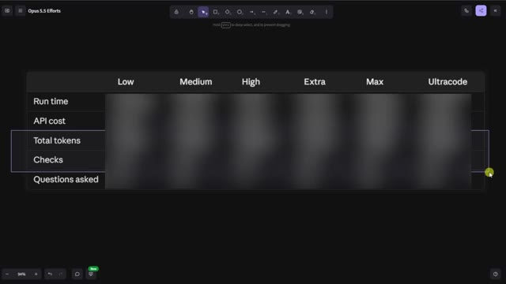
🔍 Agrandir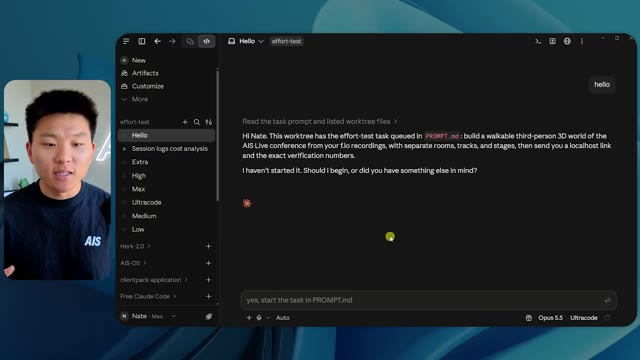
🔍 AgrandirTu as besoin de créer un monde 3D qui soit une conférence tech réaliste dans laquelle je peux me promener en vue à la troisième personne. Tu vas regarder ce dossier qui est mon événement d'enregistrement d'actifs à partir d'AIS Live. Dans ce dossier se trouve un dossier Frame IO de 105 Go de vidéos enregistrées. C'était un événement totalement virtuel, tout a été enregistré et toutes les enregistrements sont là. J'ai dit que ton objectif était de prendre cet événement et de le transformer en un monde 3D explorable qui me donne l'impression que je suis réellement allé à une conférence en personne.
Interface & Outils : Éditeur de code (VS Code / interface similaire) et interface web Frame.io
Contenu textuel & Code : Fichier Markdown PROMPT.md contenant les instructions de génération du monde 3D et URL Frame.io
Action / Démonstration : Navigation entre les fichiers de configuration du projet et consultation du dossier d'actifs vidéo en ligne
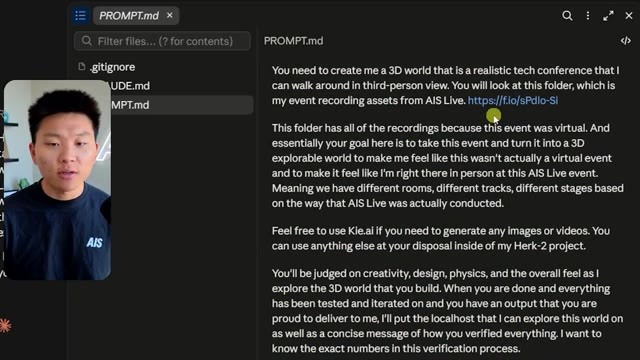
🔍 Agrandir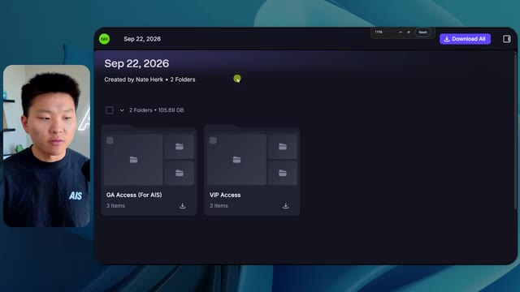
🔍 Agrandir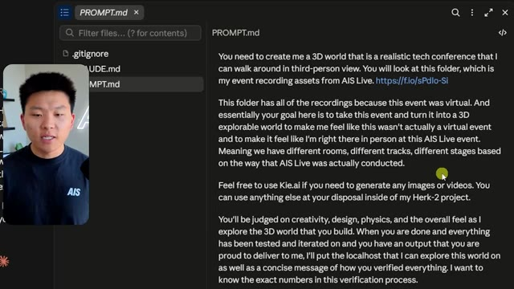
🔍 AgrandirDonc, nous avons ici le résultat pour bas. Ouvrons-le et jetons un coup d'œil. Nous avons donc IA Slive.
Interface & Outils : Éditeur de code (VS Code ou similaire) et interface d'agent IA personnalisé (Opus 5.5).
Contenu textuel & Code : Fichier PROMPT.md contenant les instructions détaillées pour générer un monde 3D réaliste de conférence avec différentes salles et pistes.
Action / Démonstration : Présentation du prompt initial et navigation dans l'interface de l'agent IA pour démarrer l'exécution de la tâche.
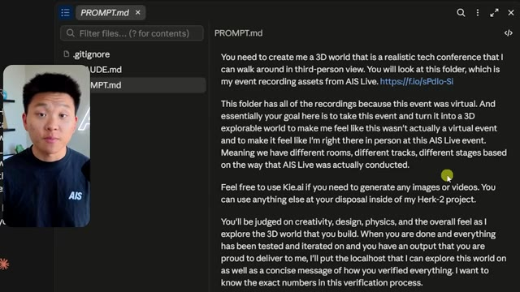
🔍 Agrandir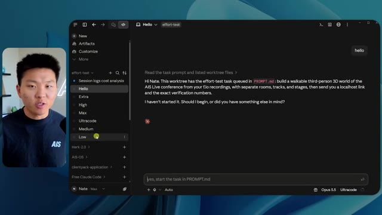
🔍 AgrandirOK, cette fois, je pense que nous avons un lieu. C'est l'étage principal où il y a le coin salon principal. C'est sympa parce qu'il y a un groupe en train de jouer de la musique en bas, donc vous l'entendez un peu en arrière-plan. Voyons si nous pouvons monter. Allons-y.
Interface & Outils : Application web interactive en 3D / environnement virtuel web.
Contenu textuel & Code : Interface graphique d'un événement virtuel 3D (AIS Live) avec des éléments de navigation textuels et spatiaux.
Action / Démonstration : Exploration d'un environnement virtuel 3D, navigation dans un espace de sommet en ligne.
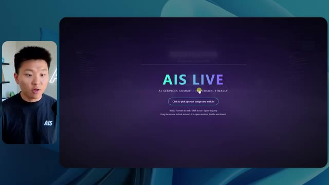
🔍 Agrandir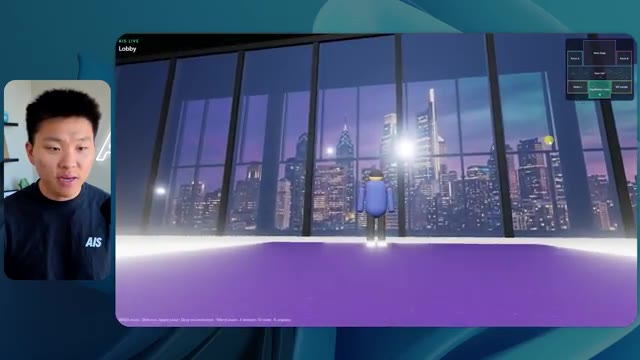
🔍 Agrandir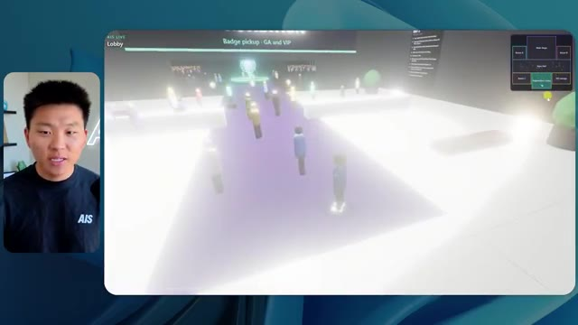
🔍 AgrandirAlors, d'abord, on va aller voir l'heure. D'accord, alors il est 12h23. La keynote commence dans moins de deux heures. C'est quand même assez fou d'y penser. Donc, je suis vraiment impatient. Bon, je viens de faire un petit café. Maintenant, je vais vérifier si j'ai reçu des e-mails. OK, pas de nouveau mail. Bon, ce n'est pas grave, je vais retourner sur le site Web de l'événement et voir si le flux en direct est disponible. Bon, rien pour l'instant. C'est normal, c'est encore tôt. Je vais aller voir le programme de la journée.
Interface & Outils : Environnement virtuel 3D / Navigateur web ou plateforme d'événement virtuel.
Contenu textuel & Code : Aucun code source, terminal ou prompt n'est affiché.
Action / Démonstration : Navigation et exploration d'un monde virtuel 3D par un avatar.
[Séquence sonore / Musique d'ambiance]
Interface & Outils : Application de réalité virtuelle / Monde virtuel interactif (style metaverse ou jeu de simulation).
Contenu textuel & Code : Instructions textuelles sur un panneau virtuel : 'Step 1: Go to Settings', 'Step 2: Go to API integrations', 'Step 3: Go to Create A New Token'.
Action / Démonstration : Navigation et exploration de l'espace virtuel par le présentateur ou son avatar pour présenter les différentes sections d'un atelier.
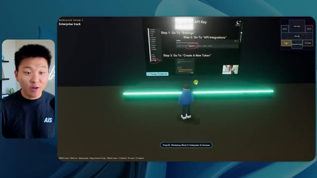
🔍 Agrandir[Séquence sonore / Musique d'ambiance]
Interface & Outils : Interface web de simulation 3D interactive (type monde virtuel ou salon virtuel).
Contenu textuel & Code : Environnement virtuel 3D avec affichage de salles de conférence, salons d'exposition et éléments textuels informatifs.
Action / Démonstration : Navigation et exploration interactive d'un espace virtuel 3D de type métavers ou plateforme événementielle en ligne.
Ok, donc je pense que vous comprenez l'ambiance qu'on obtient ici d'opus 5.5 à bas effort. Et c'est là que les choses deviennent intéressantes. Combien est-ce que vous pensez que cette requête a duré, combien de temps ? Celle-ci a duré 16 minutes et 43 secondes. Combien est-ce que vous pensez que ça coûte ? 3,91 $, si c'était une facturation par API. J'utilise évidemment mon abonnement ici, mais on va juste calculer ça en facturation par API. Total de jetons : 191000. Elle a fait 22 vérifications, donc la vérification 22 fois. Elle a ouvert le navigateur et a exécuté différentes sortes de vérifications.
Interface & Outils : Interface de tableau blanc / application de mindmapping ou tableau de données (type Miro ou similaire).
Contenu textuel & Code : Tableau avec des colonnes de niveau d'effort et des lignes de paramètres de performance (Run time, API cost, Total tokens, Checks, Questions asked).
Action / Démonstration : Le présentateur commente le tableau et survole la colonne "Low".
 🔍 Agrandir
🔍 Agrandir
[Séquence sonore / Musique d'ambiance]
Interface & Outils : Tableau de bord d'analyse de performance et interface d'événement virtuel 3D.
Contenu textuel & Code : Tableaux comparatifs de coûts d'API, temps d'exécution, nombre de tokens et interface de métavers/événement en ligne.
Action / Démonstration : Présentation des résultats de tests de performance d'agents et navigation dans un espace virtuel 3D.
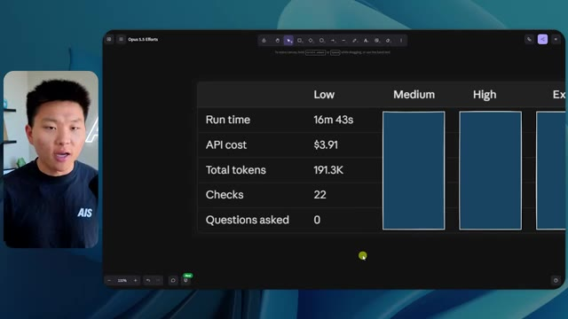
🔍 Agrandir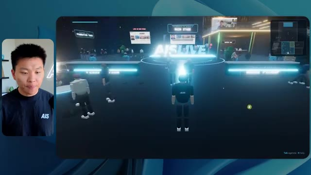
🔍 Agrandir[Séquence sonore / Musique d'ambiance]
Interface & Outils : Environnement virtuel 3D / Interface de monde virtuel en ligne
Contenu textuel & Code : Aucun code, terminal ou prompt n'est affiché ; il s'agit d'une simulation ou d'un monde virtuel 3D. [DESC_IMAGE_3] Navigation et exploration d'un espace virtuel 3D par le présentateur.
Action / Démonstration : Explications face caméra et démonstration conceptuelle.
Cela est un système hautement capable, capable d'analyser des feuilles de calcul et de générer du code ou d'écrire des essais de manière similaire à ce qui est démontré ici.
Interface & Outils : Application de métavers ou espace virtuel 3D de conférence en ligne.
Contenu textuel & Code : Menus contextuels de sessions de conférence, bannières informatives "Enterprise AI Services" et "AIS+ Certified".
Action / Démonstration : Navigation et exploration de l'espace virtuel 3D par le présentateur.
On peut voir qu'on a un 'community spotlight' donc ça c'est Aiden qui parle de son deal qu'il a landé et c'est en train de jouer live.
Interface & Outils : Application de conférence ou d'événement virtuel en 3D (type Gather, Topia ou similaire) avec avatars interactifs et affichage d'informations de session en bas à gauche.
Contenu textuel & Code : Titre de session 'How I Landed a $14,000 AI Deal' par Aidan Finnegan, affichage des panneaux de zone 'Community Spotlight' et 'Hyperagent'.
Action / Démonstration : Navigation et exploration d'un environnement virtuel 3D lors d'une session de communauté en direct.
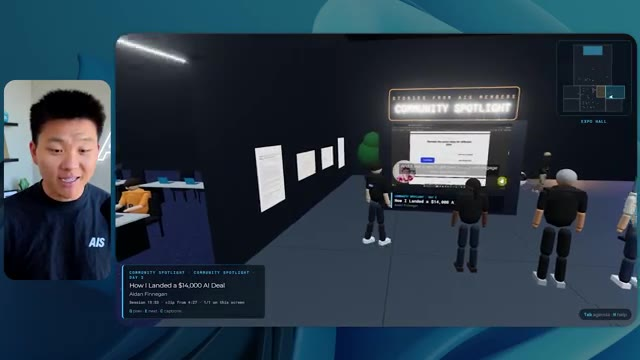
🔍 Agrandir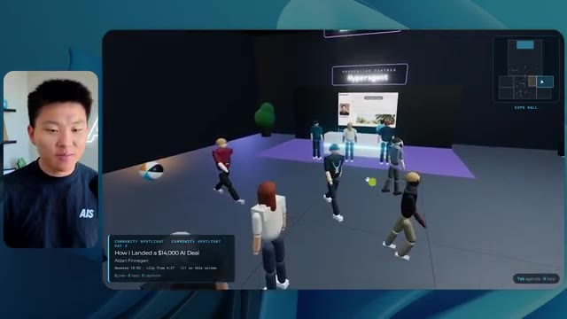
🔍 Agrandirfondation. Nous avons Sabrina Romanov et Liberty White. Donc, différentes formations juste là. Nous pouvons venir dans cette pièce. C’est la piste avancée. Qu'est-ce qui se passe ici ? Nous avons Dave Abelard et Simon qui parlent de différentes choses là-bas. Et maintenant, allons voir la scène principale. Oh attendez, il y a une vidéo de moi là-haut. Est-ce que c'est comme une section VIP ? Oui, nous irons voir cela dans une seconde. Mais de toute façon, c'est la scène principale. Cela a l'air très, très bien. Nous avons une grande scène, nous avons comme quatre personnes assises ici. Nous avons les trois écrans d'Alex là-haut avec Hyper.
Interface & Outils : Application de métavers ou de salon virtuel 3D (espace événementiel en ligne).
Contenu textuel & Code : Environnement 3D interactif affichant "Main Lobby", "Main Stage", des bannières de session ("Hyperagent Keynote") et des mini-cartes de navigation.
Action / Démonstration : Explications face caméra et démonstration conceptuelle.
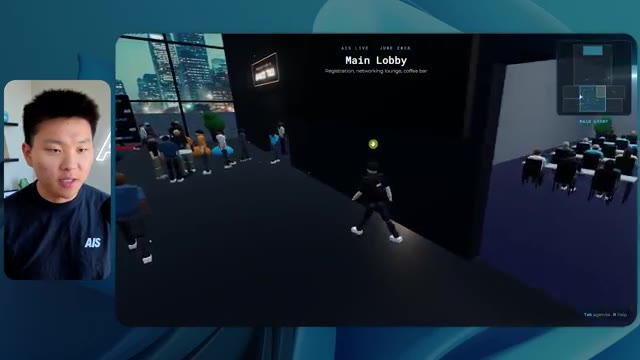
🔍 Agrandir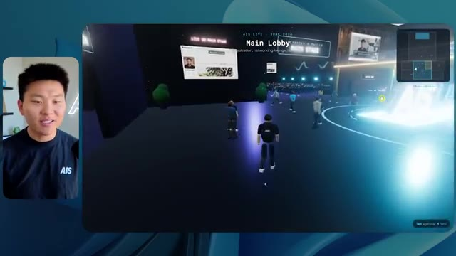
🔍 Agrandir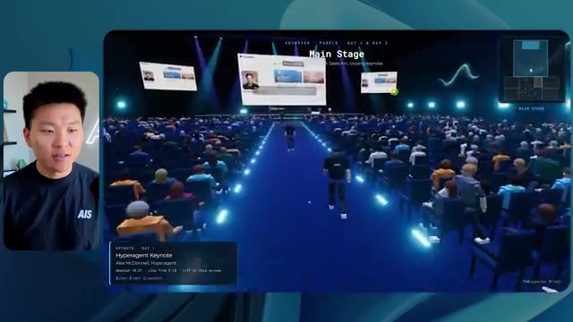
🔍 Agrandir[Séquence sonore / Musique d'ambiance]
Interface & Outils : Application de métavers / plateforme de conférence virtuelle 3D (Hyperagent Keynote).
Contenu textuel & Code : Interface utilisateur de conférence virtuelle, flux vidéo en direct, menus de sélection d'agents ("Hiring the fleet").
Action / Démonstration : Navigation et exploration d'un environnement virtuel interactif en 3D avec des avatars.
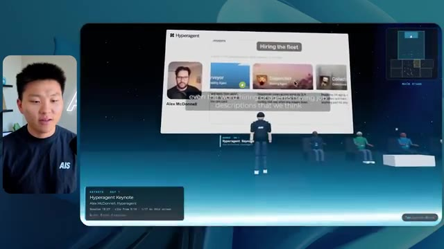
🔍 Agrandir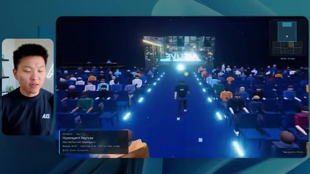
🔍 Agrandir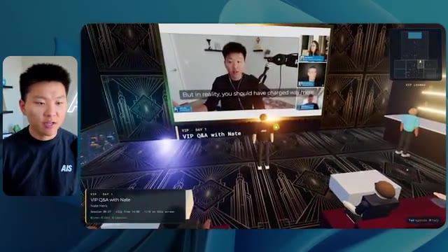
🔍 AgrandirIl aurait coûté 12,44 $, utilisé 490000 jetons et effectué 23 vérifications. Et cela nous a donné un total de zéro question, encore une fois.
Interface & Outils : Outil de tableau de bord ou d'analyse de données (style application web ou tableau blanc type Excalidraw)
Contenu textuel & Code : Tableau comparatif affichant les données pour le niveau 'Medium' : Run time (1h 13m), API cost ($3.91), Total tokens (191.3K), Checks (22), Questions asked (0).
Action / Démonstration : Analyse et présentation des métriques de performance et des coûts d'exécution de l'agent IA.
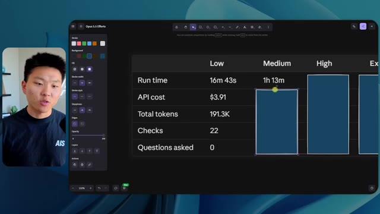
🔍 AgrandirHostinger.
Interface & Outils : Navigateur web, interface Hostinger, outils de développement (VS Code, Cursor, Claude Code, Devin).
Contenu textuel & Code : Options d'installation d'extensions et de commandes CLI pour connecter les éditeurs et agents IA à Hostinger. [DESC_IMAGE_3] Présentation des méthodes de connexion pour intégrer les outils de développement et agents IA avec Hostinger.
Action / Démonstration : Explications face caméra et démonstration conceptuelle.
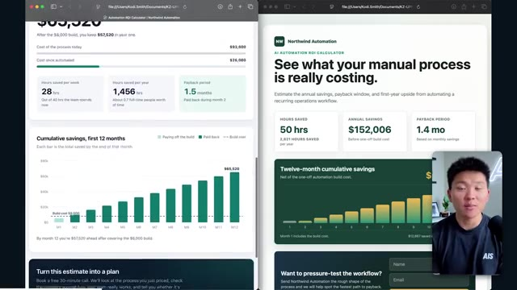
🔍 Agrandir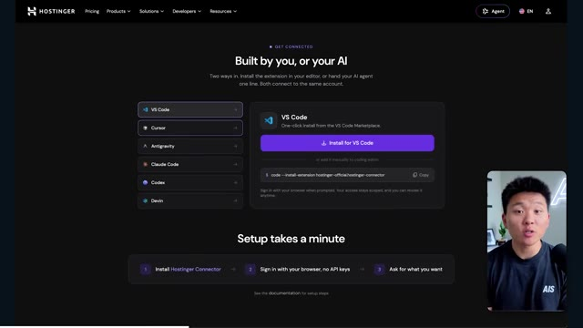
🔍 AgrandirAlors, lequel de ces services préférez-vous ? Le code, le point, ou quelque chose de plus traditionnel ? Faites-moi savoir dans les commentaires. Et pour rappel, si vous voulez automatiser vos propres tâches, vous trouverez les liens vers toutes les applications mentionnées dans la description ci-dessous. Merci d'avoir regardé cette vidéo et à bientôt dans le prochain tutoriel.
Interface & Outils : Site web Hostinger et interface de présentation de services d'hébergement.
Contenu textuel & Code : Offres tarifaires ($3.99/mo, $7.99/mo), options de déploiement et intégrations d'outils d'IA.
Action / Démonstration : Navigation et présentation des différentes formules d'abonnement et des fonctionnalités d'automatisation d'Hostinger.
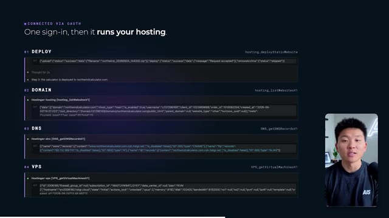
🔍 Agrandir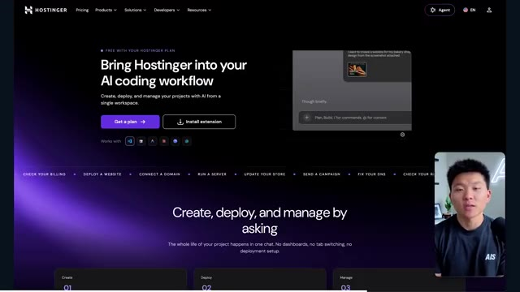
🔍 Agrandir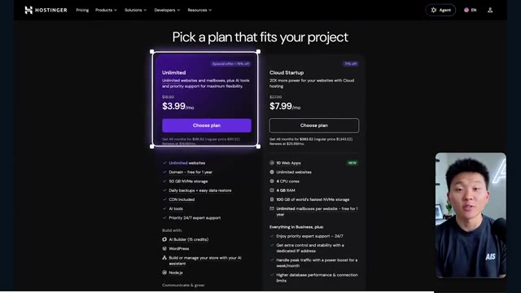
🔍 Agrandir[Séquence sonore / Musique d'ambiance]
Interface & Outils : Application web 3D interactive (RingCentral / Environnement virtuel 3D)
Contenu textuel & Code : Interface utilisateur de monde virtuel 3D avec bannières, mini-carte et commandes clavier/souris affichées à l'écran.
Action / Démonstration : Navigation et exploration d'un espace événementiel virtuel en 3D par un avatar.
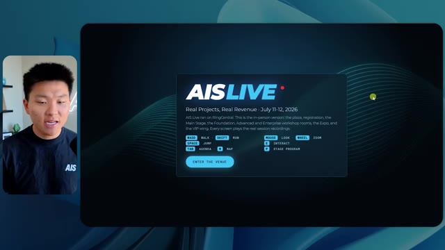
🔍 Agrandir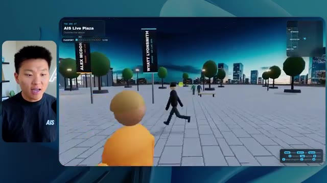
🔍 Agrandir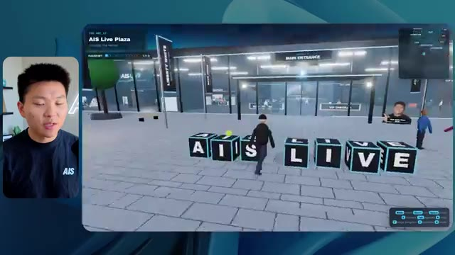
🔍 Agrandiret on peut vérifier l'Expo avec différents stands, et le projecteur communautaire. On peut également voir qu'en haut à gauche, j'ai un passeport. Donc, l'idée est que cela montre combien d'endroits j'ai visités. Tous ces endroits sont de vraies rediffusions. Nous avons un mur de ressources avec tous les différents haut-parleurs. Ils ont aussi une session de réseautage ici. Je vais donc venir voir rapidement de quoi il s'agit. Nous avons le bar à café AIS, nous avons
Interface & Outils : Application de métaverse ou plateforme d'événement virtuel en 3D
Contenu textuel & Code : Interface utilisateur avec un passeport de visite et des stands d'exposition virtuelle
Action / Démonstration : Navigation et exploration de différents stands dans un environnement virtuel 3D
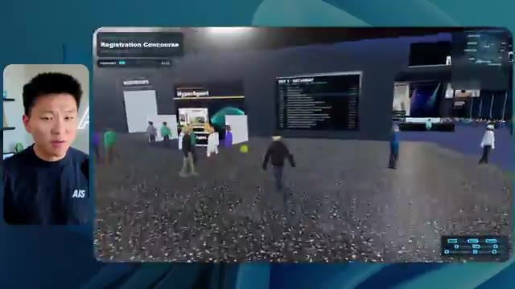
🔍 Agrandir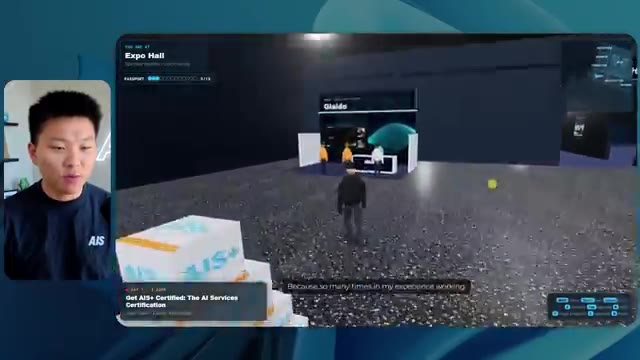
🔍 Agrandir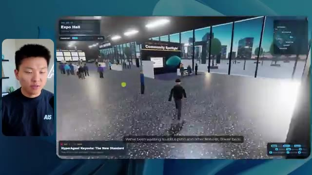
🔍 AgrandirOk, laissez-moi vérifier rapidement. Le bracelet est déjà activé. Attendez, quoi ? OK. Oh, OK, maintenant les portes se sont ouvertes pour moi. Cool. Je peux entrer ici. Oh, ça va directement à la scène principale. Salon VIP, c'est une séance de questions-réponses en cours, on dirait. Très cool. Je veux dire, je suis très impressionné par la façon dont il peut faire ça. Waouh ! OK, donc, c'est vraiment bien.
Interface & Outils : Application de monde virtuel 3D / plateforme de métavers.
Contenu textuel & Code : Interface utilisateur avec mini-carte, indicateurs de progression et sous-titres de la discussion en cours (« So evals are super, super important »).
Action / Démonstration : Navigation et exploration d'un espace virtuel 3D par l'avatar, transition vers le salon VIP.
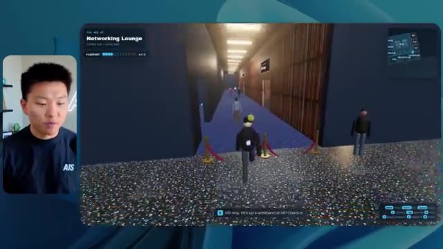
🔍 Agrandir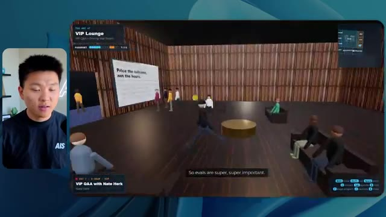
🔍 Agrandir[Séquence sonore / Musique d'ambiance]
Interface & Outils : Application ou plateforme virtuelle 3D (type metavers ou espace de réunion virtuel interactif).
Contenu textuel & Code : Éléments textuels de navigation, interfaces de réunion vidéo intégrées, avatars virtuels et boutons d'interaction contextuels.
Action / Démonstration : Navigation et exploration d'un environnement virtuel interactif avec des avatars et des flux vidéo de participants.
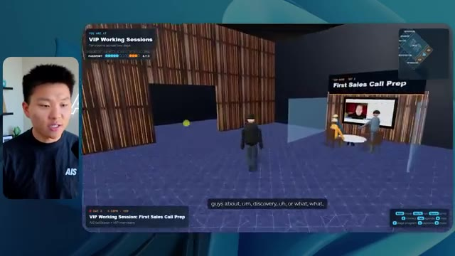
🔍 Agrandir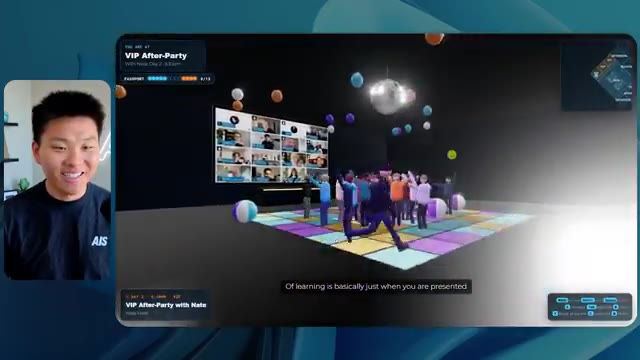
🔍 Agrandir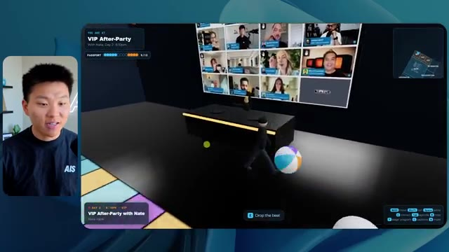
🔍 AgrandirJe vais aller sur le site Web de Claude et copier le code, et nous pourrons commencer à construire notre chatbot de service client.
Interface & Outils : AUCUNE
Contenu textuel & Code : AUCUN
Action / Démonstration : AUCUNE
C’est tout pour le moment. Low était correct, Medium était meilleur, High a été encore meilleur. Voyons si cette tendance continue et voyons ce que cela nous a coûté. Alors High a tourné pendant 1 heure et 7 minutes, donc un peu plus rapide que Medium, il aurait coûté 16,31 $, il a utilisé un demi-million de tokens, 509 000, il a effectué 22 vérifications et il nous a également demandé... Enfin, en fait non, j’avais tort, celui-ci m’a demandé une question. Et spoiler, c’était le seul qui nous a posé une question tout au long de tout cela. Donc
Interface & Outils : Application de tableau blanc ou d'édition de diagrammes (type Excalidraw) affichant un tableau comparatif.
Contenu textuel & Code : Tableau comparant les niveaux Low, Medium, High et Extra : Run time (16m 43s, 1h 13m, 1h 7m), API cost ($3.91, $12.44, $16.31), Total tokens (191.3K, 419.2K), Checks (22, 23), Questions asked (0, 0).
Action / Démonstration : Le présentateur commente le tableau comparant les performances et les coûts des différents niveaux d'effort d'un modèle d'IA.
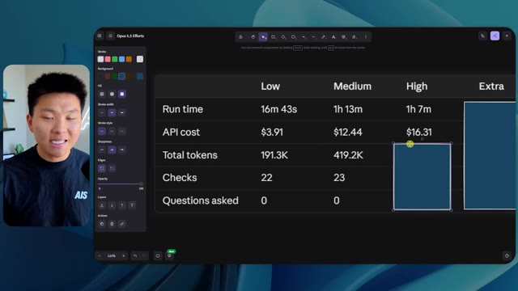
🔍 AgrandirMais de toute façon, c'est ce qui nous a permis de progresser. Bon, alors voilà l'intégration.
Interface & Outils : Application web interactive / métavers 3D "AIS LIVE"
Contenu textuel & Code : Interface utilisateur virtuelle interactive avec des contrôles clavier affichés en bas (WASD, Shift, Space, etc.)
Action / Démonstration : Exploration et navigation dans un environnement virtuel 3D représentant une convention ou un espace d'événement en ligne.
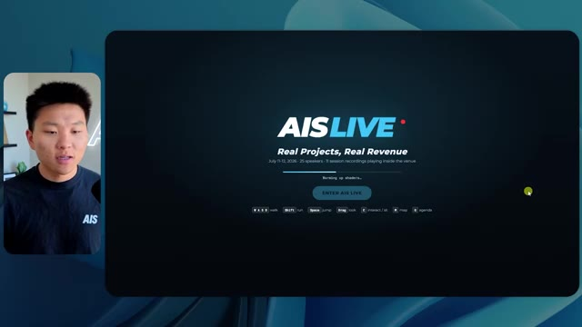
🔍 Agrandir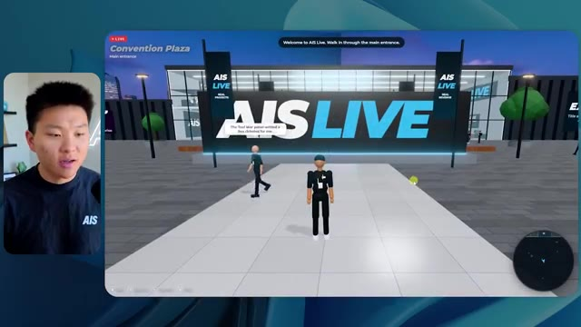
🔍 Agrandir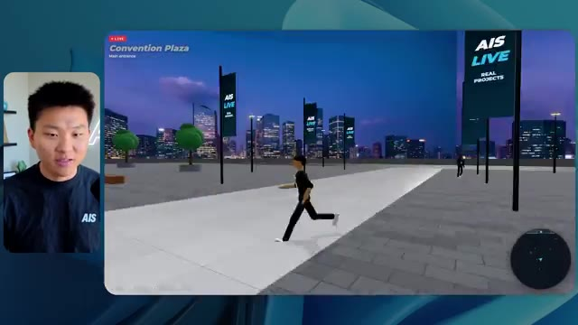
🔍 Agrandirworkshop wing is over here and let's go through the sliding glass doors and see what we've got. So we've got the AIS cafe. The map is in the bottom right and it's not too descriptive. I like how the other maps have told us what like where things were, but this one looks very professional. We can see here is the main stage, let's hop in here real quick. They've all got these balls flying around, which I think is pretty funny. The AIS beach balls. We have me up there speaking. I think I was introwing one of the days. Let's keep on moving here to the workshop
Interface & Outils : AUCUNE
Contenu textuel & Code : AUCUNE
Action / Démonstration : AUCUNE
Le Price Right room était plein.
Interface & Outils : Environnement virtuel 3D (metaverse / plateforme de conférence virtuelle)
Contenu textuel & Code : Affiches virtuelles d'ateliers et interface utilisateur de navigation dans un monde virtuel
Action / Démonstration : Navigation et exploration d'un événement virtuel en 3D avec des avatars
Room host ici, grab AnyOpenSeat, OK, cool. Et j'ai vraiment aimé la sitting functionality, c'est assez drôle, genre on peut cultiver cette tendance, ce workshop et participer. Anyways, en montrant les speakers, et en montrant l'agenda, il y a un petit red carpet ici pour prendre des images, on peut strike un pause. Oh wow, c'est plutôt cool.
Interface & Outils : Application web de conférence virtuelle 3D (espace métavers type AnyOpenSeat).
Contenu textuel & Code : Interface utilisateur virtuelle avec affichage de la liste des speakers, agenda et flux vidéo en direct.
Action / Démonstration : Navigation et déplacement d'avatar dans l'environnement virtuel 3D de la conférence.
[Séquence sonore / Musique d'ambiance]
Interface & Outils : Application web 3D immersive / Metavers (AIS Live)
Contenu textuel & Code : Environnement virtuel 3D interactif avec affichage d'informations textuelles, panneaux de session et questions de travail en groupe.
Action / Démonstration : Navigation et déplacement d'un avatar à travers le hall virtuel, puis montée des escaliers et participation à une table ronde de travail.
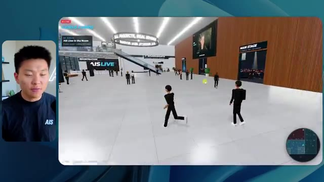
🔍 Agrandir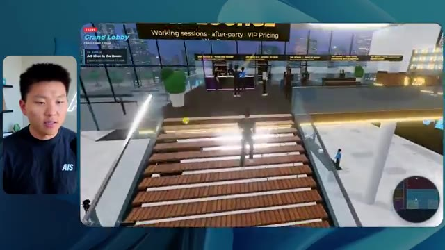
🔍 Agrandir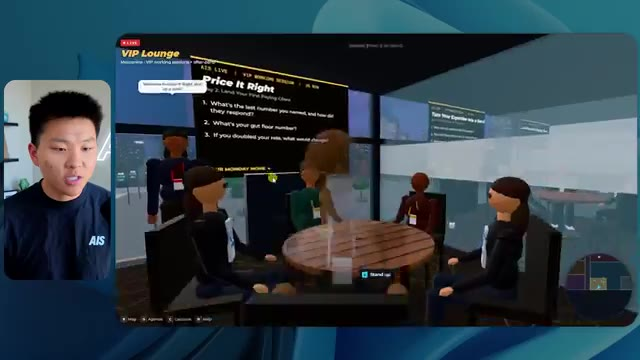
🔍 AgrandirIl y avait 733 000 jetons et 34 chèques. Donc il avait le plus de chèques de loin, de loin, et il nous a posé zéro questions.
Interface & Outils : Application de tableau blanc ou diagramme (style Excalidraw).
Contenu textuel & Code : Tableau comparatif avec les colonnes Medium (1h 13m, $12.44, 419.2K, 23, 0), High (1h 7m, $16.31, 509.3K, 22, 1), Extra (1h 31m), Max et Ultracode.
Action / Démonstration : Le présentateur commente les résultats du tableau comparatif affiché à l'écran.
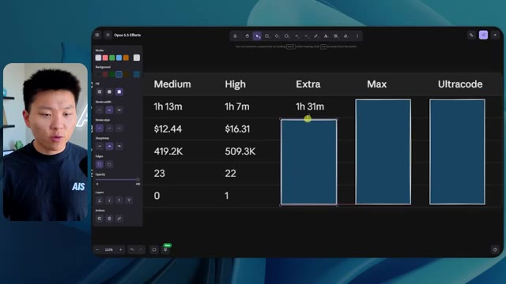
🔍 AgrandirBien, j'aime ça. On va continuer et entrer dans « AI is live ». Oh, une jolie petite animation ici qui nous fait entrer. Encore une fois, le personnage me ressemble. Ils m'ont tous ressemblé, enfin, plus ou moins. Nous avons une ville en arrière-plan, ça ressemble à Chicago. Comme je l'ai mentionné plus tôt, beaucoup d'entre eux diffusent des sons, et je n'inclus pas cela parce que ce serait très distrayant pour vous d'essayer d'écouter ce qui se passe en même temps que je parle. Il y a donc une légère musique dans tout cela. Je... je déteste la façon dont ça marche. Cette démarche est vraiment, vraiment mauvaise. Je veux dire, la marche, ouais, je n'aime pas du tout ça.
Interface & Outils : Application web interactive 3D / Plateforme virtuelle « AI is live »
Contenu textuel & Code : Interface utilisateur virtuelle affichant un mini-carte en bas à droite, des informations de session en haut à droite (« The Tool War Panel »), et des commandes de navigation clavier en bas.
Action / Démonstration : Exploration de l'espace virtuel 3D avec l'avatar et navigation dans l'application web de la conférence.
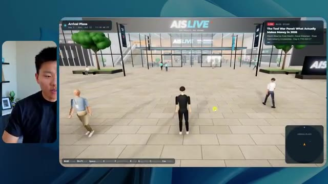
🔍 Agrandir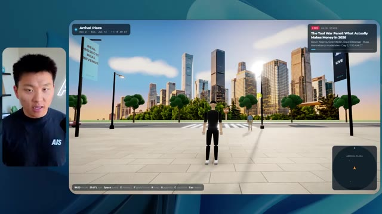
🔍 Agrandir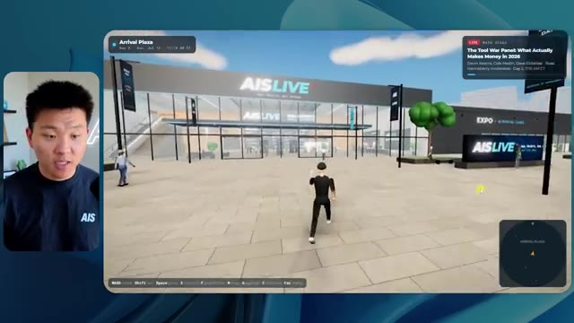
🔍 Agrandirtout, donc ce n'est pas génial. Mais à part ça, entrons et explorons. Remarquez ces ombres quand j'entre, elles basculent vraiment brusquement, je ne sais pas trop pourquoi, mais bref, on peut aussi discuter avec les gens ici. Le stand Hyperagent se trouve juste là où vous entrez dans l'expo, tout va bien. D'accord, cool, je peux continuer à cliquer sur E pour leur faire changer ce qu'ils disent. Nous avons les intervenants juste ici, ça a l'air plutôt bien, même si nous avions absolument la photo de profil de tout le monde, donc je ne sais pas pourquoi ce n'est pas inclus là. On voit des gens prendre des photos juste ici, j'adore ça, et ça enregistre une petite photo. Bon, la carte n'est pas non plus super...
Interface & Outils : Environnement virtuel 3D en ligne (plateforme de conférence virtuelle ou métaverse).
Contenu textuel & Code : Interface utilisateur virtuelle affichant des informations de navigation, une mini-carte, des listes de conférenciers et des bulles de dialogue.
Action / Démonstration : Exploration d'un monde virtuel 3D et déplacement d'un avatar dans un espace d'exposition.
Genre, ça ne me donne pas une super explication de ce qui se passe, mais j'aime bien ces stands. Ils sont cool. Je pense que ces stands sont les meilleurs que j'ai vus jusqu'à présent. Genre, ils ont juste l'air sympa, ils ont des représentants, il y a de jolies, genre, diapositives derrière eux. Ouais, ces stands sont cool. D'accord, on a un petit cinéma mis en avant par ici, c'est Casper. Bien que, pourquoi ça ne passe pas ? J'ai l'impression que ça devrait être diffusé, non ? Comme dans les autres, ça tournait toujours. On peut parler à d'autres personnes par ici, le café est gratuit, bla bla bla, Amy Simpson, Matt Wolfe, sympa, d'accord. C'est juste l'espace de réseautage dans lequel nous sommes en ce moment.
Interface & Outils : Application de salon virtuel 3D / métavers de conférence.
Contenu textuel & Code : Environnement virtuel représentant une exposition avec des stands interactifs et des écrans de présentation.
Action / Démonstration : Navigation d'un avatar dans l'espace virtuel du salon de conférence.
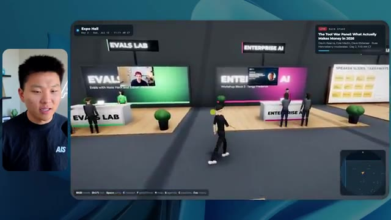
🔍 AgrandirMais on peut voir en haut à droite, on peut aussi voir ce qui est en direct sur la scène principale. En ce moment, c'est un panel « Tool War ». Allons donc par là. Nous avons Devon, Cole, Dave et Russ qui discutent ici. On a une sorte d'audiovisuel, des jeux de lumière qui se passent par ici. Basculer la scène principale sur ce qui compte vraiment en ce moment. Je peux donc changer de sujet. Cool, donc je viens de basculer sur moi et Matt. On peut aller sur « Anatomy of Three Real Deals », c'est plutôt cool. La scène a l'air bien, on a un joli petit panel là-haut. Est-ce que je peux monter sur scène ? Sympa, sympa. Bon, je ne peux pas aller trop loin en réalité. Très
Interface & Outils : Application de métavers / environnement virtuel 3D (AIS Live)
Contenu textuel & Code : Interface utilisateur avec mini-carte, commandes de déplacement et affichage vidéo en direct de la scène principale.
Action / Démonstration : Navigation et exploration d'un environnement virtuel de conférence 3D.
Glenn a 15 ans d'expérience en agence, son land in expand stuffer est or. Great work Glenn. Cool. Je m'en vais je peux même pas get past ce guy though. Oh, I have to jump over him. Okay, VIP level, badge acquired. Oh my gosh, you have to Are you kidding me? I have to go get my badge.
Interface & Outils : Application web 3D interactive (Metaverse / Virtual Event platform)
Contenu textuel & Code : Environnement virtuel 3D de conférence avec avatars et bulles de texte interactives
Action / Démonstration : Navigation et déplacement d'un avatar dans l'espace virtuel 3D vers le niveau VIP
Oh, cette fois-ci, c'est la bonne. Ah, attends, laisse-moi voir s'il y a quelque chose de nouveau. Un nouveau message. "Le système est à jour", cool. Allez, allons voir la suite.
Interface & Outils : Navigateur web / Application de monde virtuel 3D (plateforme de conférence ou événement en ligne).
Contenu textuel & Code : Environnement virtuel 3D interactif avec interface utilisateur affichant des informations de session ("VIP Level", "Anatomy of Three Real Deals") et une mini-carte en bas à droite.
Action / Démonstration : Navigation et exploration d'un espace virtuel 3D par un avatar contrôlé par le présentateur.
ateliers. OK, ça, c'était pas bon. Regarde ça. Tu vois tout ? Et là, j'ai juste glitché et maintenant, boom. Donc, c'est pas bon. Je dirais qu'en gros, vous avez l'ambiance de comment ça marche, mais je dirais que le précédent, qui était, je crois, high, je l'aimais mieux. Je ne peux pas m'asseoir dans ces chaises non plus. Ouais. Donc, je n'aime pas la marche dans celui-là, et je n'aime pas tellement l'ambiance, et il y a des bugs. Donc, jusqu'à présent, si on va à notre liste, j'aime extra. Extra était celui que j'aimais le plus jusqu'à présent.
Interface & Outils : Application metaverse / plateforme de salon virtuel 3D (type Gather ou environnement web 3D interactif).
Contenu textuel & Code : Environnement virtuel 3D avec avatars, panneaux d'orientation, écrans de présentation et mini-carte en bas à droite.
Action / Démonstration : Navigation et exploration de l'espace virtuel par le présentateur sous forme d'avatar.
Did it really though? Because there was a lot of bugs in there. And anyways, this one asked us zero questions. So, so far, each time pretty much has gotten more expensive and took longer, besides right here, but these basically took like very similar
Interface & Outils : Application de tableau blanc / outil de mindmapping ou de design (ex: Excalidraw ou similaire).
Contenu textuel & Code : Tableau avec les colonnes High (1h 7m, $16.31, 509.3K tokens, 22, 1), Extra (1h 31m, $25.92, 733.7K tokens, 34, 0), Max (2h 28m, $50.38) et Ultracode.
Action / Démonstration : Le présentateur commente et analyse les résultats chiffrés et l'évolution des coûts en fonction du niveau d'effort sélectionné.
C'est un beau badge, Host all access. Nous avons un beau visuel juste ici. Nous allons aller dans AI's live. Cool. OK, bienvenue Nate. J'aime la marche, ça fait réaliste. J'aime le logo.
Interface & Outils : Application web AIS LIVE et interface de tableau de bord analytique.
Contenu textuel & Code : Tableaux comparatifs de performances (Run time, API cost, Total tokens, Checks) et écran de connexion/accueil "AIS LIVE" avec nom d'utilisateur.
Action / Démonstration : Présentation de la plateforme interactive AIS LIVE et consultation de métriques d'évaluation de modèles ou d'agents.
Nevers Eats soggy Waffles.
Interface & Outils : Simulation virtuelle 3D / Jeu vidéo en ligne
Contenu textuel & Code : Environnement virtuel de conférence (AIS Live) avec des instructions textuelles à l'écran
Action / Démonstration : Navigation d'un avatar dans un espace virtuel d'exposition et d'enregistrement
Ce n'est pas le cas pour les deux et c'est ce que nous faisons avec une équipe spéciale chez Anthropic, pour nous assurer que chaque grand modèle linguistique que nous lançons répond à nos normes de sécurité avant sa sortie, et c'est le travail que nous avons fait pour Claude 3.5 Sonnet. Et donc, dans l'évaluation de la sécurité, ce que nous examinons, ce sont les capacités du modèle, ses capacités dangereuses, et nous voulons également voir s'il peut faciliter l'augmentation de la puissance des cyberattaques ou l'autonomie.
Interface & Outils : Application ou plateforme de simulation virtuelle 3D en ligne.
Contenu textuel & Code : Environnement virtuel 3D interactif avec des affichages textuels contextuels ("VIP Wing", "Scope to Ship").
Action / Démonstration : Navigation et exploration d'un monde virtuel 3D.
[Séquence sonore / Musique d'ambiance]
Interface & Outils : Application de métavers / espace virtuel 3D en ligne.
Contenu textuel & Code : Interface d'un monde virtuel avec mini-carte en haut à droite, sous-titres et indications textuelles de navigation.
Action / Démonstration : Exploration et navigation interactive dans un environnement 3D virtuel.
Dès qu'on entre, tout commence à jouer. On a une très belle ambiance de scène. Comment on fait pour obtenir un siège d'allée ?
Interface & Outils : Application web interactive / plateforme virtuelle en 3D
Contenu textuel & Code : Interface utilisateur avec mini-carte, instructions textuelles et sous-titres de la vidéo
Action / Démonstration : Navigation et exploration d'un environnement virtuel interactif en 3D
tu pourrais dans les précédentes versions chatter avec des personnes, ce qui je trouve était une vraiment une belle touche. Et nous avons Workshop A Foundation track, can I sit down ?
Interface & Outils : Application web de monde virtuel 3D interactif (type événement virtuel ou metaverse).
Contenu textuel & Code : Environnement virtuel 3D avec affichage textuel des lieux (Main Stage, Expo Hall, Workshop Wing) et sous-titres des conversations.
Action / Démonstration : Exploration et navigation interactive au sein d'un événement virtuel en 3D avec des avatars.
[Séquence sonore / Musique d'ambiance]
Interface & Outils : Application de simulation virtuelle 3D / environnement virtuel en ligne.
Contenu textuel & Code : Interface d'un espace virtuel collaboratif montrant des ateliers (Workshop A et B) et des avatars de participants.
Action / Démonstration : Navigation et exploration de l'espace virtuel interactif par le présentateur.
Cela a pris 1 heure et 35 minutes, donc c'était beaucoup plus rapide que Max.
Interface & Outils : Application de tableau blanc / diagramme en ligne (style Excalidraw) nommé "Opus 5.5 Efforts".
Contenu textuel & Code : Tableau comparatif de performances avec les colonnes High, Extra, Max et Ultracode, affichant des durées (ex: 1h 35m pour Ultracode) et des coûts.
Action / Démonstration : Le présentateur commente le tableau comparatif des durées et coûts des différents modèles d'IA.
qui était réfléchi à l'intérieur de cette session. Évidemment, comme j'ai dit, celui-ci est allé au-delà, vous savez, de 950 K, donc, ou quelle que soit la taille de la fenêtre de compaction. Je n'ai jamais
Interface & Outils : Application de tableau blanc ou d'édition de graphiques, avec le présentateur visible en incrustation.
Contenu textuel & Code : Tableau avec des colonnes 'h', 'Extra', 'Max', 'Ultracode' et des lignes affichant des durées (ex: 1h 31m, 2h 28m), des coûts (ex: $25.92, $50.38) et des nombres de tokens.
Action / Démonstration : Le présentateur commente les données et les performances affichées dans le tableau.
mais pour une raison, ça n'a juste pas l'air bien, parce qu'essentiellement ce qu'ultracode est, est son effort supplémentaire, et puis
Interface & Outils : Application de tableau de bord / interface web de benchmark (Opus 5.5 Efforts).
Contenu textuel & Code : Tableau de données comparant les modes de performance : Run time, API cost, Total tokens, Checks, Questions asked.
Action / Démonstration : Analyse comparative des différents niveaux d'effort et du mode Ultracode.
comme tu l'as vu, comment ils progressent.
Interface & Outils : Tableau de bord d'analyse ou interface de visualisation de données
Contenu textuel & Code : Tableau avec colonnes Low, Medium, High, Extra, Max, Ultracode et lignes Run time, API cost, Total tokens, Checks, Questions asked.
Action / Démonstration : Analyse comparative des coûts et performances des différents modes d'exécution.
had 12.9x on the cheapest run compared to the most expensive run, which I believe was $3.98 to $50.38. So that was low and max. As far as max checks versus low, we had a 2.3x multiple. The total across all six was 127 bucks, and Ultra Code was $18.69. Let's look at speed versus cost here. So let me zoom out a little bit so we can see this whole thing. So on the X-axis, we have runtime and the Y-axis, we have cost. So I feel like
Interface & Outils : Interface web / Tableau de données comparatif.
Contenu textuel & Code : Tableau de données : Run time (16m 43s à 2h 28m), API cost ($3.91 à $50.38), Total tokens (191.3K à 1.18M), Checks (22 à 51), Questions asked (0 à 1).
Action / Démonstration : Le présentateur commente les résultats de coût et de performance affichés dans le tableau pour chaque niveau d'effort.
Et d'ailleurs, la raison pour laquelle UltraCode montre ça est parce qu'il utilise en fait un niveau d'effort supplémentaire. C'est juste
Interface & Outils : Interface web de test de performance (graphique interactif type benchmark).
Contenu textuel & Code : Graphique de dispersion évaluant le temps d'exécution (Run time) et le coût en API ($), avec des points étiquetés "Low", "Medium", "High", "Extra", "Ultracode" et "Max". Une infobulle indique les détails pour le niveau Max : 2h 28m, $50.38, 1.18M tokens, 51 checks.
Action / Démonstration : Le curseur survole un point du graphique pour afficher les détails d'une session de test.
et d'autres modèles, comme je l'ai mentionné. Donc Claude 3.5 Sonnet prend tout simplement le dessus. C'est pourquoi j'utilise beaucoup plus ces flux de travail dynamiques et de ce genre, ce qui explique pourquoi celui-ci, vous savez, cela a du sens, car il utilisait essentiellement des éléments supplémentaires en arrière-plan. C'est également pour cette raison que Claude l'a étiqueté ici en orange. Quoi qu'il en soit, si nous continuons à remonter d'ici, cela a généralement du sens, n'est-ce pas ?
Interface & Outils : Interface web de test et de monitoring (« Opus Effort Test »)
Contenu textuel & Code : Graphique de dispersion (scatter plot) intitulé « Speed vs cost » montrant le temps d'exécution (Run time) en abscisse et le coût en dollars en ordonnée, avec une info-bulle sur le point « Extra » (1h 31m, $25.92, 733.7K tokens, 34 checks).
Action / Démonstration : Le présentateur commente les résultats de performance et de coût affichés sur le tableau de bord.
Je ne peux pas vraiment me rappeler si celui-ci était un de ceux où oh, je ne pouvais pas parler aux gens là, je pouvais juste
Interface & Outils : Interface web de test et jeu/plateforme virtuelle 3D (type metaverse ou salon virtuel).
Contenu textuel & Code : Graphique de statistiques de modèle IA et environnement virtuel 3D avec interface de navigation et de discussion.
Action / Démonstration : Navigation et exploration de l'espace virtuel et affichage de graphiques de performance.
walk right through them. I couldn't sit in this one either. Here is another little visual thing where I basically just walk right through this wall, so don't love that. But I think was this one where I could sit in these sessions? No, okay, so I don't think this was my winner then. This is extra high. I think this is the winner. Yeah, I think this is the one that I liked the most. I loved this whole vibe. I loved that I could chat to people. This was definitely the one where we could come in here and we could sit wherever we wanted. Take a seat, stand up. I could read these three deals and I could chat with them. I also realized that there was a little section to do Motic or
Interface & Outils : Application ou plateforme virtuelle 3D interactive (environnement type métavers ou événement virtuel).
Contenu textuel & Code : Environnement virtuel 3D avec avatars, mini-carte, indicateurs d'objectifs et interface de contrôle.
Action / Démonstration : Exploration d'un espace virtuel 3D et test des interactions avec les différents décors et salles de conférence.
 🔍 Agrandir
🔍 Agrandir
Donc mon gagnant ici est définitivement 00:25:00 à être 00:25:00 extra. 00:25:00 Extra dit
Interface & Outils : Application ou plateforme virtuelle 3D interactive (type métavers / salon virtuel).
Contenu textuel & Code : Environnement 3D avec interface utilisateur incrustée (mini-carte en bas à droite, boutons d'interaction).
Action / Démonstration : Navigation et exploration de l'espace virtuel 3D par le présentateur.
Il a eu beaucoup de raisonnement, il a dû faire face à des tonnes de choses, il a dû faire face à des tonnes de vidéos, il a dû
Interface & Outils : Interface web ou application de tableau de bord d'évaluation avec une incrustation vidéo du présentateur à gauche.
Contenu textuel & Code : Tableau avec des métriques de performance : Run time (de 16m 43s à 2h 28m), API cost (de $3.91 à $50.38), Total tokens (de 191.3K à 1.18M), Checks (22 à 51), et Questions asked (0 ou 1).
Action / Démonstration : Présentation des résultats d'analyse et de test comparant l'impact des différents niveaux de raisonnement sur les coûts et les durées d'exécution.
et je vous verrai tous dans le prochain.
Interface & Outils : Interface de tableau de bord ou canvas de présentation.
Contenu textuel & Code : Tableau avec des métriques de performance et de coûts d'API par niveau d'effort.
Action / Démonstration : Présentation des résultats comparatifs des différents tests d'efforts.
OK. Merci tout le monde.
Interface & Outils : Aucune interface logicielle visible.
Contenu textuel & Code : Aucun code, terminal ou donnée affiché.
Action / Démonstration : Le présentateur s'adresse à la caméra pour conclure la vidéo.